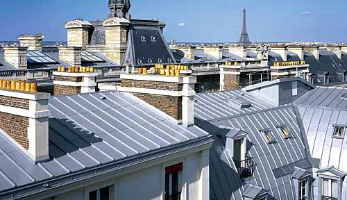
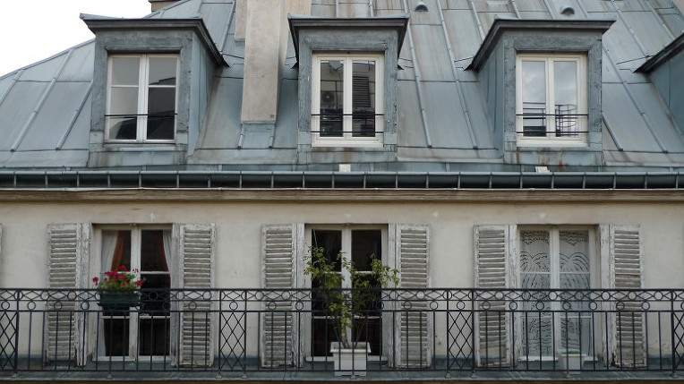
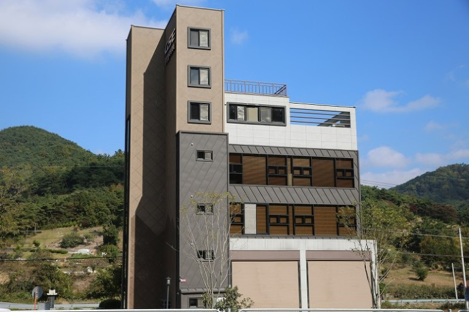
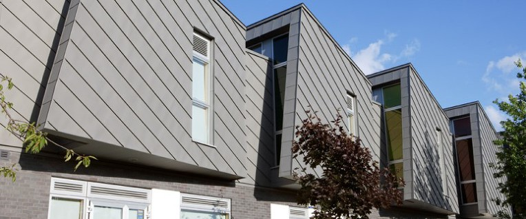

징크에서 Zinc는 아연(Zn)을 뜻합니다.
요즘 엄청나게 핫한 인기를 끌고 있는 건축 외장재입니다.
건축용 외장재로서의 징크는 1811년 Rolled Zinc가 개발된 이후부터인데, 얇고 넓적하게 가공되어 지붕재로 사용되었습니다.

프랑스 파리의 징크 지붕
심지어 프랑스는 1852년 도시재정비에 모든 지붕에 징크를 사용하도록 규정해, 오늘날 파리 건물의 지붕재 90% 이상이 징크라고도 합니다.
징크는 친환경적이면서 최소 30년에서 100년까지 수명을 보장하는데, 특히 시간에 따라 산화되면서 여러가지 색으로 변해 '살아있는 소재'입니다.
VM징크, ZM징크,NED징크 등으로 불리우며 통상 '오리지널 징크'라고 합니다.

요즘 주변에서 건축물의 외관으로 많이 사용되고 있는건 '징크판넬' (리얼징크)입니다. 징크를 본떠 대중적으로 사용될 수 있도록 만든 것으로 징크zinc 의 산화과정에서 보이는 다양한 색상을 표현한 샌드위치판넬입니다.

모던(Modern)함과 내추럴(Natural)한 면을 동시에 만족시키는 자재로 상가, 팬션, 카페, 사무실 등 건축물의 외관을 중요시 하는 많은 분들이 찾고 있습니다.
내식성이 우수한 갈바륨 강판과
준불연 DK보드 심재로 구성된
대광 준불연 DK보드 판넬 !
대광 준불연 DK보드 판넬은
화재에 강하고
오랜 시간이 지나도
부식 걱정없습니다